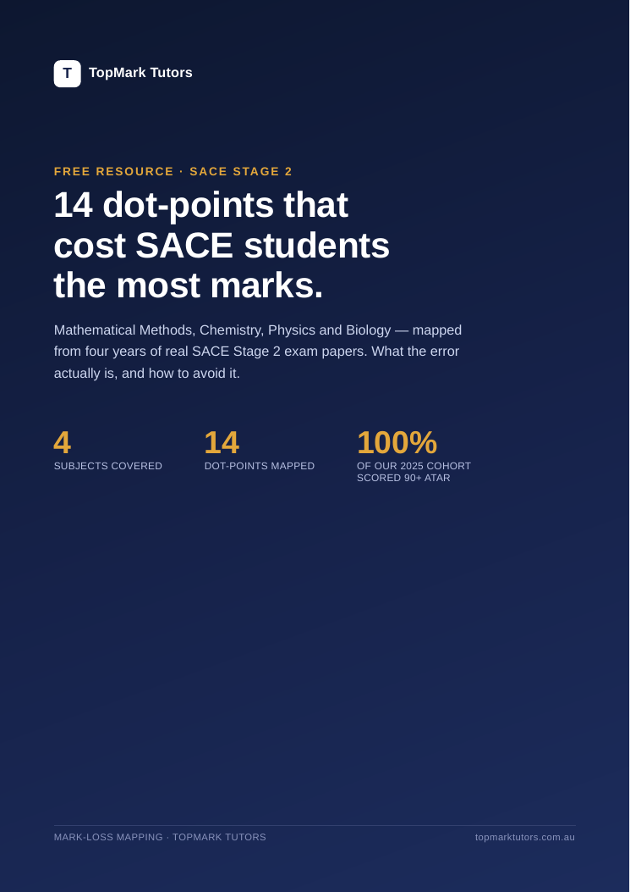

Outline walkthrough
Every dot-point of that session's topic, in order, straight from the official SACE subject outline. Brief explanation, then one exam-style question worked live so you see the method applied, not just described.
Term 3 holidays • Flinders University City campus
Six intensive sessions per subject across the Term 3 holidays, taught in person by tutors who have topped these subjects. Every dot-point covered, weighted towards where marks are actually lost, finishing with a full marked mock exam.
What it is
Most students spend the holidays re-reading notes and redoing questions they can already answer. It feels productive, and it never touches the dot-points that are actually costing them marks.
The Crash Course does the opposite. Each subject is compressed into six two-hour sessions that walk the official SACE subject outline dot-point by dot-point, with an exam-style question worked live for every point. Time is weighted, not spread evenly: the points historically linked to the biggest mark loss get the most attention. Every student receives a TopMark textbook for each subject they enrol in, so the notes, worked examples and practice questions stay with them right through to the exam.
It runs in person at the Flinders University City campus during the Term 3 holidays, in small groups, and finishes roughly three weeks before the exams so there is still time to act on what the mock exam reveals.
Secure Your PlaceSession structure
Predictable structure means no session is wasted working out what to do, and every student works from their own TopMark textbook.
Every dot-point of that session's topic, in order, straight from the official SACE subject outline. Brief explanation, then one exam-style question worked live so you see the method applied, not just described.
Mixed questions across all the dot-points just covered, done under timed conditions and marked or reviewed so you leave knowing exactly which points still need work.
A complete mock matching the real paper's length and structure, marked and returned within 48 hours with a written mark-loss breakdown showing exactly where your marks went.
Schedule
Methods and Physics run Monday, Wednesday and Friday. Chemistry and Biology run Tuesday, Thursday and Saturday. Morning and afternoon slots are paired so multi-subject students never have a clash.
| Date | Day | 10:00am to 12:00pm | 1:00pm to 3:00pm |
|---|---|---|---|
| 28 Sep | Mon | Methods, Session 1 | Physics, Session 1 |
| 29 Sep | Tue | Chemistry, Session 1 | Biology, Session 1 |
| 30 Sep | Wed | Methods, Session 2 | Physics, Session 2 |
| 1 Oct | Thu | Chemistry, Session 2 | Biology, Session 2 |
| 2 Oct | Fri | Methods, Session 3 | Physics, Session 3 |
| 3 Oct | Sat | Chemistry, Session 3 | Biology, Session 3 |
| 5 Oct | Mon | Methods, Session 4 | Physics, Session 4 |
| 6 Oct | Tue | Chemistry, Session 4 | Biology, Session 4 |
| 7 Oct | Wed | Methods, Session 5 | Physics, Session 5 |
| 8 Oct | Thu | Chemistry, Session 5 | Biology, Session 5 |
| 9 Oct | Fri | Methods, Session 6 (Mock exam) | Physics, Session 6 (Mock exam) |
| 10 Oct | Sat | Chemistry, Session 6 (Mock exam) | Biology, Session 6 (Mock exam) |
Sessions run during the SA Term 3 school holidays (26 September to 11 October 2026), finishing the day before Term 4 begins.
What each subject covers
Each subject is broken into five content sessions plus a full mock exam.
Mon, Wed, Fri • 10:00am to 12:00pm
SACE exam: 2 November
Mon, Wed, Fri • 1:00pm to 3:00pm
SACE exam: 5 November
Tue, Thu, Sat • 10:00am to 12:00pm
SACE exam: 4 November
Tue, Thu, Sat • 1:00pm to 3:00pm
SACE exam: 6 November

Free resource • SACE Stage 2
We went through four years of real SACE Stage 2 papers in Mathematical Methods, Chemistry, Physics and Biology, and mapped every question back to the exact dot-point it tested. The same handful of points show up year after year as the place students lose marks they should have kept.
The guide names all fourteen: what the dot-point is, what the error actually looks like, and how to fix it before it costs you marks in November. We call it Mark-Loss Mapping, and it is the same method the Crash Course is built on.
Your guide is ready. A copy is on its way to your inbox as well.
Download the Guide (PDF)Pricing
Early bird pricing runs from 17 August to 6 September. From 7 September, standard pricing applies until enrolments close on 25 September.
$399 standard
$349
Save $50Early bird price, until 6 September
$699 standard
$599
Save $100Early bird price, until 6 September
$949 standard
$799
Save $150Early bird price, until 6 September
$1,149 standard
$949
Save $200Early bird price, until 6 September
| Package | Early bird 17 Aug to 6 Sept | Standard 7 Sept to 25 Sept | You save |
|---|---|---|---|
| 1 subject | $349 | $399 | $50 |
| 2 subjects | $599 | $699 | $100 |
| 3 subjects | $799 | $949 | $150 |
| All 4 subjects | $949 | $1,149 | $200 |
Prices are per student and cover all six sessions for each subject selected, including the TopMark textbook, the mock exam and marking. An invoice is issued once payment is received.
Expression of interest
Places are limited and confirmed in order of payment. Not ready to pay yet? Choose "send me the details" and we will send you the full timetable first.
Who it suits
The Crash Course works alongside school revision and any of our year-round programs.
Questions
In person at the Flinders University City campus in Adelaide. It runs during the Term 3 school holidays, so there is no clash with school.
Monday 28 September to Saturday 10 October 2026, inside the Term 3 holiday window. Each subject runs 6 sessions of 2 hours. That finishes roughly three weeks before the SACE external exams, leaving time for independent revision.
Yes, and the timetable is built for it. Methods and Physics run Monday, Wednesday and Friday; Chemistry and Biology run Tuesday, Thursday and Saturday. Morning and afternoon slots are paired so multi-subject students never have a clash.
Small groups. If a subject fills, we open a second cohort rather than increase the group size, so every student still gets attention.
Ninety minutes walking through the subject outline dot-point by dot-point, with an exam-style question worked live for each one, then a 30 minute timed quiz across everything just covered. Time is weighted towards the dot-points that historically cost students the most marks.
Yes. The final session in every subject is a full mock exam matching the real paper's length and structure. It is marked and returned within 48 hours with a written mark-loss breakdown for each student.
No. The Crash Course is exam-weighted. We cover every dot-point in the outline, but the time is spent where marks are actually lost, and every point is tied to a real exam-style question.
Yes. Every student receives a TopMark textbook for each subject they enrol in, covering the full subject outline with worked examples and practice questions. It is yours to keep and work from right up to the exam.
Payment is by bank transfer using the details on the booking form. Your invoice is sent through once payment is received, and places are confirmed in order of payment.
Limited places
Secure your place now, or ask us a question about the program first.
Secure Your Place General Tutoring Enquiry